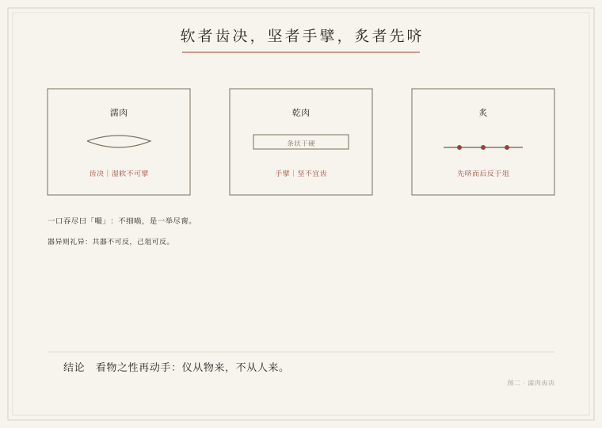

曲礼上 · 一·七十三 · 第 71 课
湿软的肉用牙咬断，干肉不用牙咬（用手擘）；炙肉不要一口吞尽。三条都讲「怎么吃」：依物之性，用其宜。
说什么事：濡肉齿决，乾肉不齿决，毋嘬炙。
落在哪一层：仪。上节讲主人之辞，此节回讲客之食法。
为何编在此位：一·七十一至七十二讲味，此节讲「决」与「嘬」；同是入口之事，而各有其法。
【经】濡肉齒決，乾肉不齒決，毋嘬炙。
【注】決猶斷也。堅宜用手。為其貪食甚也。嘬謂一舉盡臠。《特牲》、《少牢》嚌之，加於俎。
濡肉齿决 濡，湿也。疏：「湿软不可用手擘，故用齿断决而食之。」
乾肉不齿决 注「坚宜用手」。疏：「乾肉，脯属也，坚肕不可齿决断之，故须用手擘而食之。」郑注《腊人》「大物解肆乾之，谓之乾肉」。
毋嘬炙 注「为其贪食甚也。嘬谓一举尽脔」。疏：「炙肉濡，若食炙，先当以齿哜而反置俎上，不一举而并食；并食之曰嘬。」
哜 至齿也。《特牲》《少牢》尸及祝佐食得肉皆哜之，哜竟加置于俎。
湿软的肉用牙咬断；干肉不用牙咬；炙肉不要一口吞尽。
三条都在「依物之性」：软者齿决，坚者手擘，炙者先哜后置。礼不立一条通法，只教人看手里这块肉是什么样子。看物，是礼的第一课。
第一层 齿与手的分别 软用齿，坚用手。同一入口，而工具不同。此条看似琐细，实是「因物制仪」：仪从物来，不从人来。
第二层 炙之哜 炙肉濡，先以齿哜（咬至齿）而后反置俎上，再一次一次吃。一口吞尽谓之「嘬」，是贪。疏说得明白：不细啮，是一举尽脔。
第三层 反置俎上之义 与「毋反鱼肉」相反：彼是共器，不可反；此是己俎，可反。同一动作，器异则礼异。此层最见礼的精细：看的不是动作，是器与谁共。
第四层 贪之形 「毋嘬炙」与「毋抟饭」「毋流歠」「毋扬饭」同贯：礼反复指认「贪」的形状。贪不是一个念头，是四个动作。
与今日何干 今人吃烤肉，一口撕尽者近于「嘬」；吃牛肉干用牙撕者，古人以为不雅。此节不必尽行于今，然「看物之性再动手」一义，处处可用。
| 左 | 右 |
|---|---|
| 濡肉齿决 | 湿软，用手不能擘，故用齿断 |
| 乾肉不齿决 | 坚，宜用手擘 |
| 毋嘬炙 | 炙濡，先哜而后反置俎，勿一举尽脔 |
| 哜 | 至齿而不咀嚼 |
| 器异礼异 | 共器不可反，己俎可反 |
画案上三物并置：左一块湿软的肉（切面湿润、边缘柔软下垂）；中一条干肉（条状、表面干硬有皱）；右一具小俎，俎上放一串炙肉，炙肉已被咬去一小口，余者尚串在签上。不画手、不画人、不写文字。赭色只在炙签与俎足。
